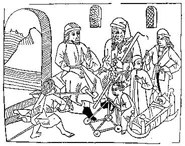

Gode
Cookery Presents
True stories, fables and anecdotes from the
Middle Ages
|
Medieval
parents have been accused by certain modern writers of a want of
feeling toward their children, but even in the comparative poverty of
the kind of literary expressions - correspondence and memoirs - that
have recorded such sentiments for more recent times, the charge
scarcely stands up. Between the lines in the accounts of the coroners
may be read again and again the anguish of parents over a lost child:
one father searching for his son, drowned in a ditch, "found him,
lifted him from the water, could not save him, and he died"; another,
whose son was struck by lightning in a field, "came running toward him,
found him lying there, took him in his arms to the house... thinking to
save him"; a mother dragged her son out of a ditch "because she
believed she could save him"; a father whose son fell into the millpond
"tried to save [him] and entered the water but could do nothing."
Sometimes peasants gave their lives for their children, as in one case
when a father was killed defending his young daughter from rape.
A
fourteenth-century sermon pictures a mother and her child: "In winter,
when the child's hands are cold, the mother takes him to a straw or
rush and bids him warm it, not for love of the straw, to warm it, but
to warm the child's hands [by pressing them together]." When the child
falls ill, "the mother for her sick child takes a candle, and makes a
vow in prayers."
The coroner's rolls yield rare glimpses of children at work and play: the baby in the cradle by the fire; little girls following their mothers around, helping to stir the pot, draw water, gather fruit; little boys following their father to the fields, to the mill, or fishing, or playing with bows and arrows. A sermon pictures a child using his imagination, playing "with flowers... with sticks, and with small bits of wood, to build a chamber, buttery, and hall, to make a white horse of a wand, a sailing ship of broken bread, a burly spear from a ragwort stalk, and of a sedge a sword of war, a comely lady of cloth, and be right busy to deck elegantly with flowers." A child, said one preacher, did not bear malice, "nor rancor nor wrath toward those that beat him ever so sorely, as it happened for a child to have due chastening. But after thou hast beaten him, show him a fair flower or else a fair red apple; then he hath forgotten all that was done to him before, and then he will come to thee, running, with his embracing arms, to please thee and to kiss thee." Small children played; older ones did chores. In their teens, both boys and girls moved into an adult work world, the girls in and around the house, the boys in the fields. Contrary to what was formerly believed, in this period village children were not ordinarily sent away to become servants in other people's households or to be apprenticed at a craft. Most remained at home. 
The Ages of Man, from Bartholomaeus Anglicus, Propriétaire des Choses, Lyon 1482. In the village as in castle and city, babies were born at home, their birth attended by midwives. Men were excluded from the lying-in chamber. Literary evidence suggests that the woman in labor assumed a sitting or crouching position. Childbirth was dangerous for both mother and child. The newborn infant was immediately prepared for baptism, lest it die in a state of original sin. If a priest could not be located in time, someone else must perform the ceremony, a contingency for which water must be kept ready. If the baptizer did not know the formula in Latin, he must say it in English or French: "I christen thee in the name of the Father and the Son and the Holy Ghost. Amen." The words must be said in the right order. If the baptizer said, "In the name of the Son and the Father and the Holy Ghost," the sacrament wa invalid. Robert Manning told the story of a midwife who said the wrong words: She
held it on her lap before,
And when she saw that it would die, She began loud for to cry, And said, "God and Saint John, Christen the child both flesh and bone." When the priest heard the formula she had used, he cried, "God and Saint John give thee both sorrow and shame... for in default a soul is lost," and he commanded her no longer to deliver babies. Robert Manning concluded, Being
a midwife is a perilous thing
Unless she knows the points of christening. John Myre in his Instructions for Parish Priests (early fifteenth century) advised that if the baby seemed likely to die, "though the child but half be born/ Head and neck and no more," the midwife should "christen it and cast on water." If the mother died before the child could be born, the midwife mist free the child with a knife, to save its life, or at least to assure baptism. Excerpts from: Life in a Medieval Village by Frances & Joseph Gies. New York: HarperCollins Publishers, 1990. |
BACK to DAILY LIFE PAGE ONE
ANGELS | CATS
| CHRISTMAS | CLERGY
|
DAILY LIFE | GARDENS
| FOOD & DRINK
INNS & TAVERNS | MIRACLES
| RELIGIOUS ART | RIDDLES
© 1997-2004 James L. Matterer
Return to: Table of Contents
Please visit The Gode Cookery Bookshop | This site hosted by Visual Presence